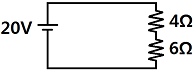
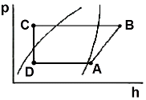
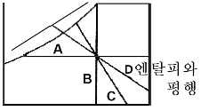

공조냉동기계기능사 (2010-10-03 기출문제)
1과목: 공조냉동안전관리
1. 다음 중 불안전한 상태라 볼 수 없는 것은?
- 환기 불량
- 위험물의 방치
- 안전교육의 미숙
- 기계기구의 정비 불량
(정답률: 79%)

2. 응축기에서 응축 액화된 냉매가 수액기로 원활히 흐르지 못하는 가장 큰 원인은?
- 액 유입관경이 크다.
- 액 유출관경이 크다.
- 안전밸브의 구경이 적다.
- 균압관의 관경이 적다.
(정답률: 85%)
3. 연료계통의 화재 발생 시 가장 적합한 소화작업에 해당되는 것은?
- 물을 붓는다.
- 산소를 공급해 준다.
- 점화원을 차단한다.
- 가연성 물질을 차단한다.
(정답률: 73%)
4. 냉동 제조 설비의 안전관리자의 인원에 대한 설명 중 바른 것은?
- 냉동능력 300톤 초과(냉매가 프레온일 경우는 600톤 초과)인 경우 안전관리원은 3명 이상이어야 한다.
- 냉동능력이 100톤 초과 300톤 이하(냉매가 프레온일 경우는 200톤 초과 600톤 이하)인 경우 안전관리원은 1명 이상이어야 한다.
- 냉동능력 50톤 초과 100톤 이하(냉매가 프레온인 경우 100톤 초과 200톤 이하)인 경우 안전관리 총괄자는 없어도 상관없다.
- 냉동능력 50톤 이하(냉매가 프레온인 경우 100톤 이하)인 경우 안전관리 책임자는 없어도 상관없다.
(정답률: 78%)
5. 아크용접작업 기구 중 보호구와 관계없는 것은?
- 용접용 보안면
- 용접용 앞치마
- 용접용 홀더
- 용접용 장갑
(정답률: 93%)
6. 펌프의 보수 관리 시 점검 사항 중 맞지 않는 것은?
- 윤활유 작동 확인
- 축수 온도 확인
- 스타핑 박스의 누설 확인
- 다단 펌프에 있어서 프라이밍 누설 확인
(정답률: 65%)
7. 다음 중 보일러의 부식원인과 가장 관계가 적은 것은?
- 온수에 불순물이 포함될 때
- 부적당한 급수처리 시
- 더러운 물을 사용 시
- 증기 발생량이 적을 때
(정답률: 86%)
8. 전기의 접지 목적에 해당되지 않는 것은?
- 화재 방지
- 설비 증설 방지
- 감전 방지
- 기기손상 방지
(정답률: 86%)
9. 전기용접 작업할 때에 안전관리 사항 중 적합하지 않은 것은?
- 우천 시에는 옥외작업을 하지 않는다.
- 피 용접물은 완전히 접지시킨다.
- 옥외용접 시에는 헬멧이나 핸드실드를 사용하지 않아도 된다.
- 용접봉은 홀더로부터 빠지지 않도록 정확히 끼운다.
(정답률: 92%)
10. 공구와 그 사용법을 바르게 연결한 것은?
- 바이스 - 암나사 내기
- 그라인더 - 공작물 연마
- 리머 - 공작물을 고정
- 핸드 탭 - 구멍 내면의 다듬질
(정답률: 82%)
11. 아세틸렌 용기의 사용설명에 대한 내용으로 적절치 못한 것은?
- 화기나 열기를 멀리한다.
- 충돌이나 충격을 주면 안 된다.
- 용기 저장소는 옥외의 환기가 안 되는 곳이어야 한다.
- 가스 조정기나 용기의 밸브에 호스를 연결시킬 때는 바르게 한다.
(정답률: 91%)
12. 산업안전기준에 관한 규칙에 의거 사업주는 안전을 위해 작업조건에 적합한 보호구를 지급하여야 한다. 이 때 사업주가 보호구를 지급하는 기준으로 옳은 것은?
- 동시에 작업하는 근로자의 수 이하
- 동시에 작업하는 근로자의 수 이상
- 월 평균 작업근로자의 수 이상
- 연 평균 작업근로자의 수 이상
(정답률: 82%)
13. 산업안전기준에 관란 규칙상 작업장의 계단의 폭은 얼마 이상으로 하여야 하는가?
- 50㎝
- 100㎝
- 150㎝
- 200㎝
(정답률: 85%)
14. 컨베이어 등을 사용하여 작업할 때 작업 시작 전 점검사항이다. 해당되지 않는 것은?
- 원동기 및 풀리기능의 이상 유무
- 이탈 등의 방지장치기능의 이상 유무
- 비상정지장치 기능의 이상 유무
- 작업면의 기울기 또는 요철유무
(정답률: 80%)
15. 안전점검의 종류에 대한 설명이 바르지 않은 것은?
- 정기점검은 작업 전에 실시하는 점검이다.
- 수시점검은 작업 전, 작업 중, 작업 후에 수시로 실시하는 점검이다.
- 임시점검은 일상 발견 시 또는 재해 발생 시실시하는 점검이다.
- 특별점검은 기계기구의 신설, 변경, 수리 등에 의해 부정기적으로 실시하는 점검이다.
(정답률: 72%)
2과목: 냉동기계
16. 응축기의 발열량 Q1, 증발기의 흡수열량 Q2, 압축소요 열당량 Aw이라면 올바른 관계식은?
- Aw = Q1 - Q2
- Aw = Q1 ＋ Q2
- Aw = Q2 - Q1
- Aw = Q1 / Q2
(정답률: 56%)
17. 2단 압축장치의 구성 기기가 아닌 것은?
- 고단 압축기
- 증발기
- 팽창 밸브
- 캐스케이드 응축기
(정답률: 77%)
18. 다음 회로 내에 흐르는 전류는 몇 A인가?

- 1A
- 2A
- 3A
- 4A
(정답률: 86%)
19. 냉매가 냉동기유에 다량으로 융해되어 압축기 기동 시 크랭크케이스내의 압력이 급격히 낮아지면서 발생하는 현상은?
- 오일흡착 현상
- 오일에멀젼 현상
- 오일포밍 현상
- 오일케비테이션 현상
(정답률: 68%)
20. 수냉식 응축기 냉각관의 일반적인 청소시기로 적당한 것은?
- 매월 1회
- 매년 1회
- 3개월에 1회
- 6개월에 1회
(정답률: 65%)
21. 완전 기체에서 단열 압축 과정에 나타나는 현상은?
- 비체적이 커진다.
- 전열량이 변화가 없다.
- 엔탈피가 증가한다.
- 온도가 낮아진다.
(정답률: 72%)
22. 다음 중 수소, 염소, 불소, 탄소로 구성된 냉매계열은?
- HFC계
- HCFC계
- CFC계
- 할론 계
(정답률: 87%)
23. 회전식 압축기(rotary compressor)의 특징 설명으로 옳지 않은 것은?
- 왕복동식에 비해 구조가 간단하다.
- 기동 시 무부하로 기동될 수 있으며 전력소비가 크다.
- 압축비에 비하여 체적효율이 높다.
- 진동 및 소음이 적다
(정답률: 47%)
24. 온도 자동팽창 밸브에서 감온통의 부착위치는?
- 팽창밸브 출구
- 증발기 입구
- 증발기 출구
- 수액기 출구
(정답률: 69%)
25. 압축기의 톱 클리어런스가 크면 어떠한 영향이 나타나는가?
- 체적효율이 증대한다.
- 냉동능력이 감소한다.
- 토출가스 온도가 저하한다.
- 윤활유가 열화하지 않는다.
(정답률: 57%)
26. 파이프 내의 압력이 높아지면 고무링은 더욱 파이프 벽에 밀착되어 누설을 방지하는 접합 방법은?
- 기계적 접합
- 플랜지 접합
- 빅토릭 접합
- 소켓 접합
(정답률: 70%)
27. 브라인의 종류 중 무기질 브라인은?
- 에틸알콜
- 에틸렌글리콜
- 프로필렌글리콜
- 염화나트륨수용액
(정답률: 63%)
28. 냉동톤(RT)에 대한 설명 중 맞는 것은?
- 한국 1냉동톤은 미국 1냉동톤보다 크다.
- 한국 1냉동톤은 3024kcal/h이다.
- 제빙기가 1일 동안 생산할 수 있는 얼음의 톤수를 1냉동톤이라고 한다.
- 1냉동톤은 0℃의 얼음이 1시간에 0℃의 물이 되는데 필요한 열량이다.
(정답률: 70%)
29. 시퀀스 제어에 사용되는 무접점 릴레이의 특징으로 틀린 것은?
- 작동 속도가 빠르다.
- 온도 특성이 양호하다.
- 장치의 소형화가 가능하다.
- 진동에 의한 오작동이 적다.
(정답률: 48%)
30. 냉동장치의 온도 관계에 대한 사항 중 올바르게 표현한 것은? (단, 표준냉동 사이클을 기준으로 할 것)
- 응축온도는 냉각수 온도보다 낮다.
- 응축온도는 압축기 토출가스 온도와 같다.
- 팽창밸브 직후의 냉매온도는 증발온도보다 낮다.
- 압축기 흡입가스 온도는 증발온도와 같다.
(정답률: 51%)
31. 핀 튜브에 관한 설명 중 틀린 것은?
- 관내에 냉각수, 관외부에 프레온 냉매가 흐를 때 관외측에 부착한다.
- 증발기에 핀 튜브를 사용하는 것은 전열 효과를 크게 하기 위함이다.
- 핀은 열전달이 나쁜 유체 쪽에 부착한다.
- 관내에 냉각수, 관외부에 프레온 냉매가 흐를 때 관내측에 부착한다.
(정답률: 62%)
32. 다음 냉동장치에 대한 설명 중 옳은 것은?
- 고압 차단스위치 작동압력은 안전밸브 작동압력보다 조금 높게 한다.
- 온도식 자동 팽창밸브의 감은통은 증발기의 입구측에 붙인다.
- 가용전은 프레온 냉동장치의 응축기나 수액기 등을 보호하기 위하여 사용된다.
- 파열판은 암모니아 왕복동 냉동장치에만 사용된다.
(정답률: 62%)
33. 간접 팽창식과 비교한 직접 팽창식 냉동장치의 설명으로 틀린 것은?
- 소요동력이 적다.
- 냉동톤(RT)당 냉매 순환량이 적다.
- 감열에 의해 냉각시키는 방법이다.
- 냉매의 증발 온도가 높다.
(정답률: 57%)
34. 흡수식 냉동장치와 증기분사식 냉동장치의 냉매로 사용되는 것은?
- 물
- 공기
- 프레온
- 탄산가스
(정답률: 69%)
35. 열펌프에서 압축기 이론 축동력이 3kW이고, 저온부에서 얻은 열량이 7kW일 때 이론 성적계수는 약 얼마인가?
- 1.43
- 1.75
- 2.33
- 3.33
(정답률: 41%)
36. 다음 중 다원 냉동장치에서만 볼 수 있는 것은?
- 불응축가스퍼저
- 중간 냉각기
- 캐스케이드열교환기
- 부스터
(정답률: 69%)
37. 얼음두께 280mm, 브라인 온도 -9℃일 때 결빙에 소요된 시간으로 맞는 것은?
- 약 25시간
- 약 49시간
- 약 60시간
- 약 75시간
(정답률: 58%)
38. 배관도시 기호 중 유체의 종류에 따른 문자 기호가 서로 잘못 짝지어진 것은?
- 공기-A
- 가스-G
- 유류-O
- 물-S
(정답률: 88%)
39. 암모니아 냉매 배관을 설치할 때 시공방법으로 틀린 것은?
- 관이음 패킹재료는 천연고무를 사용한다.
- 흡입관에는 U트랩을 설치한다.
- 토출관의 합류는 Y 접속으로 한다.
- 액관의 트랩부에는 오일 드레인 밸브를 설치한다.
(정답률: 72%)
40. 냉동장치의 장기간 정지 시 운전자의 조치사항으로서 옳지 않는 것은?
- 냉각수는 다음에 사용 시 필요함으로 누설되지 않게 밸브 및 플러그의 잠김 상태를 확인하여 잘 잠가 둔다.
- 저압측 냉매를 전부 수액기에 회수하고, 수액기에 전부 회수할 수 없을 때에는 냉매통에 회수한다.
- 냉매 계통 전체의 누설을 검사하여 누설 가스를 발견했을 때에는 수리해 둔다.
- 압축기의 축봉 장치에서 냉매가 누설될 수 있으므로 압력을 걸어 둔 상태로 방치해서는 안 된다.
(정답률: 66%)
41. 다음과 같은 P-h 선도에서 온도가 가장 높은 곳은?

- A
- B
- C
- D
(정답률: 83%)
42. 다음 중 암모니아 불응축 가스 분리기의 작용에 대한 설명으로 옳은 것은?
- 분리되어진 공기는 수조로 방출된다.
- 암모니아 가스는 냉각되어 응축액으로 되어 유분리기로 되돌아간다.
- 분리기내에서 분리되어진 공기는 온도가 상승한다.
- 분리된 암모니아 가스는 압축기로 흡입되어진다.
(정답률: 41%)
43. 다음 중 입형 셀 앤 튜브식 응축기의 특징이 아닌 것은?
- 옥외 설치가 가능
- 액냉매의 과냉각도가 쉬움
- 과부하에 잘 견딤
- 운전 중 청소 가능
(정답률: 51%)
44. 분해조립이 필요한 부분에 사용하는 배관연결 부속은?
- 부싱, 티이
- 플러그, 캡
- 소켓, 엘보
- 플랜지, 유니온
(정답률: 83%)
45. 다음 중 교류회로의 주기 T(sec)를 옳게 표현한 것은? (단, 주파수 f[Hz], 각도 θ[rad]로 한다.)
- T = 1/f
- T = f/1
- T = θ/f
- T = f/θ
(정답률: 54%)
3과목: 공기조화
46. 인체가 느끼는 온열 감각에 대한 온도, 습도, 기류의 영향을 하나로 모아서 만든 쾌감지표는?
- 실내건구온도
- 실내습구온도
- 상대습도
- 유효온도
(정답률: 80%)
47. 어떤 실내의 취득 현열량을 구하였더니 30000kcal/h, 잠열이 10000kcal/h이었다. 실내를 25℃, 50% 유지하기 위해 취출온도차 10℃로 송풍하고자 한다. 이때 현열비는?
- 0.7
- 0.75
- 0.8
- 0.85
(정답률: 75%)
48. 덕트재료 중에서 고온의 공기 및 가스가 통과하는 덕트 및 방화댐퍼, 보일러의 연도 등에 가장 많이 사용되는 재료는?
- 열간 압연 박강판
- 동판
- 아연도금 강판
- 염화비닐판
(정답률: 57%)
49. 공기냉각 코일의 설치에 대한 내용으로 틀린 것은?
- 공기의 풍속은 2~3m/s가 되도록 한다.
- 물의 속도는 일반적으로 1m/s 전후가 되도록 한다.
- 코일의 설치는 관이 수직으로 놓이게 한다.
- 공기류와 수류의 방향은 역류가 되도록 한다.
(정답률: 58%)
50. 다음 중 송풍량을 결정하는 것은?
- 실내취득열량 ＋ 기기 내 취득열량
- 실내취득열량 ＋ 재열량
- 기기내 취득열량 ＋ 외기부하
- 재열량 ＋ 외기부하
(정답률: 74%)
51. 다음 중 공조방식 중에서 개별 공기조화 방식에 해당되는 것은?
- 팬코일 유닛 방식
- 2중덕트 방식
- 복사·냉난방 방식
- 패키지 유닛 방식
(정답률: 78%)
52. 다음의 습공기 선도에서 비체적을 나타내는 선은?

- A
- B
- C
- D
(정답률: 64%)
53. 주철제 보일러의 특징이 아닌 것은?
- 내식성 및 내열성이 좋다.
- 내압강도 및 열 충격에 강하다.
- 복잡한 구조도 제작이 용이하다.
- 조립식으로 반입 또는 해체가 용이하다.
(정답률: 54%)
54. 다음 밸브 중 유체의 역류방지용으로 사용되는 것은?
- 게이트 밸브(gate valve)
- 글로브 밸브(globe valve)
- 앵글 밸브(angle valve)
- 체크 밸브(check valve)
(정답률: 78%)
55. 난방을 하기 위한 공조시스템의 열원설비에 속하지 않는 것은?
- 보일러
- 급수펌프
- 환수탱크
- 냉각수펌프
(정답률: 60%)
56. 흡수식 감습장치에서 주로 사용하는 흡수제는?
- 아드 소울
- 리튬염화
- 실리카겔
- 활성 알루미나
(정답률: 62%)
57. 방열기의 표준발열량은 표준상태에 있어서 실내온도 및 열매온도에 의해 결정되는데, 증기방열기의 표준발열량으로 옳은 것은?
- 450kcal/m2h
- 440kcal/m2h
- 650kcal/m2h
- 750kcal/m2h
(정답률: 60%)
58. 팬의 효율을 표시하는데 있어서 사용되는 전압효율에 대한 올바른 정의는?
- 축동력 / 공기동력
- 공기동력 / 축동력
- 회전속도 / 송풍기크기
- 송풍기크기 / 회전속도
(정답률: 60%)
59. 덕트의 열손실방지를 위해 반드시 보온을 필요로 하는 부분은?
- 환기 덕트
- 외기 덕트
- 배기 덕트
- 급기 덕트
(정답률: 50%)
60. 파이프 코일을 바닥이나 천장 등에 설치하고, 냉수 또는 온수를 보내어 냉난방을 하는 방식을 무엇이라고 하는가?
- 전 공기방식
- 패키지 유닛방식
- 유인유닛방식
- 복사 냉난방식
(정답률: 77%)